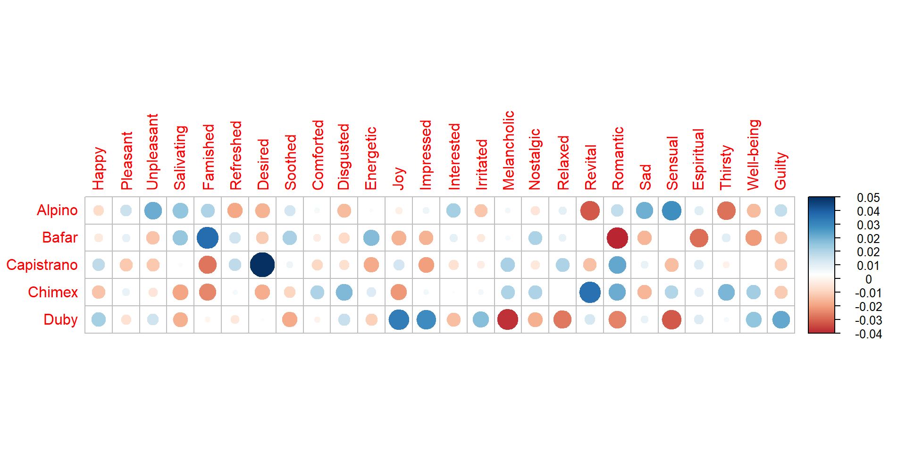
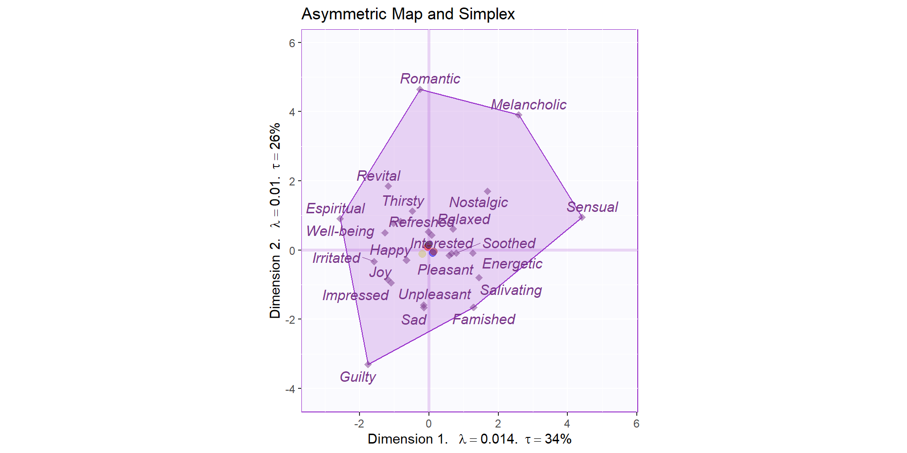
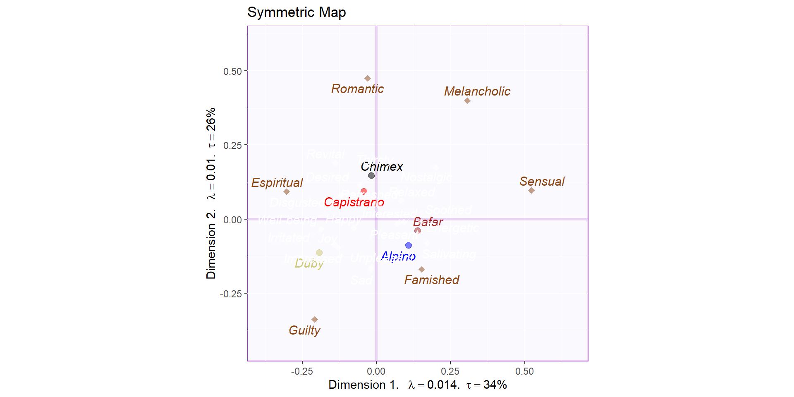
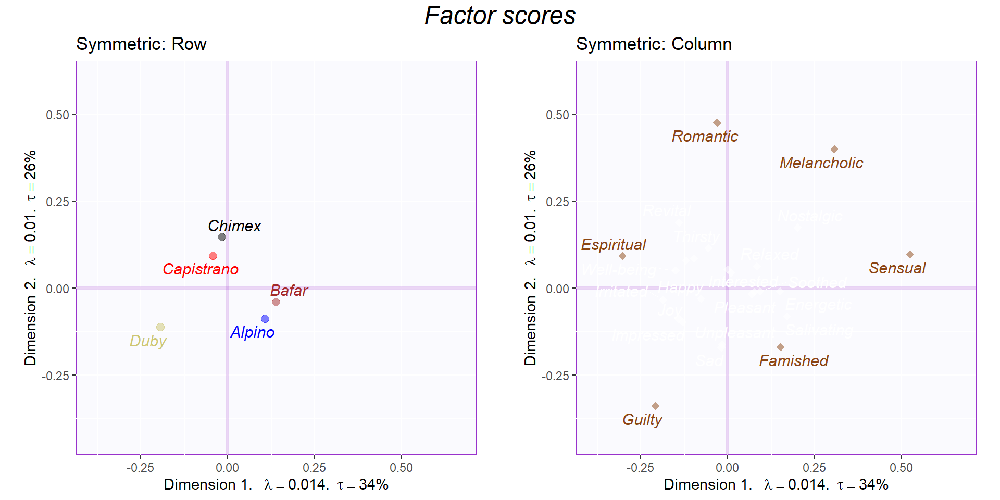
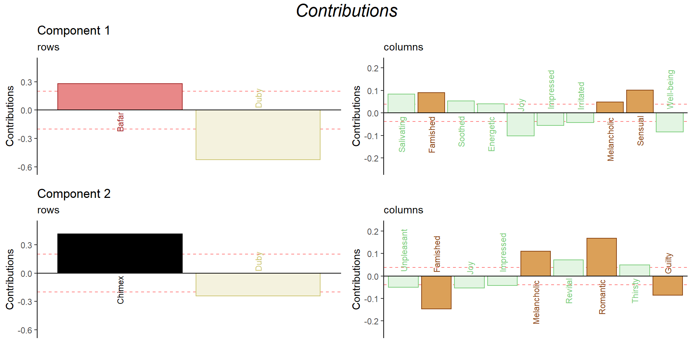
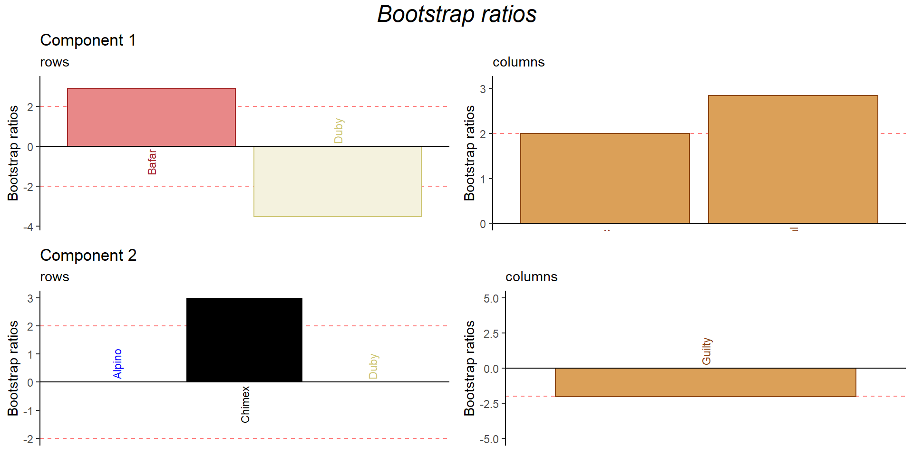
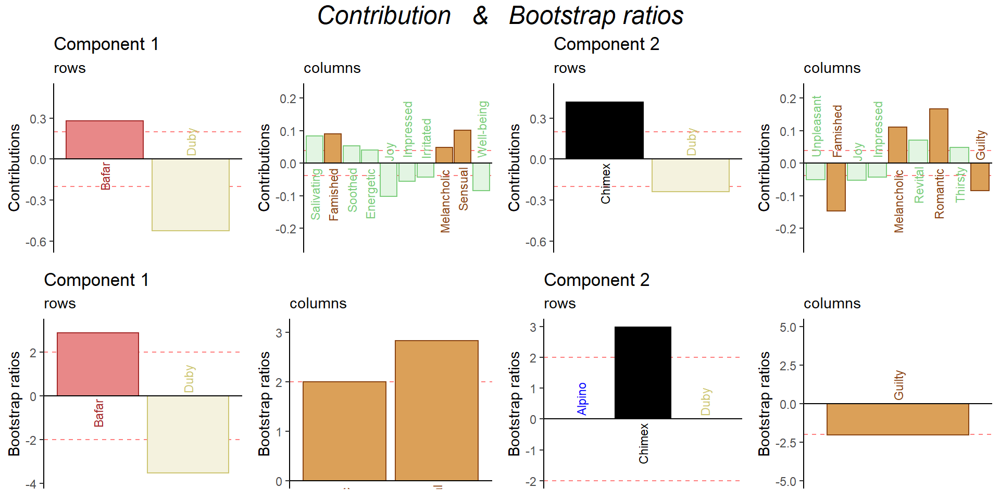

Chapter 2 Correspondence Analysis
Correspondence Analysis is similar to PCA, but is meant for qualitative data. Factor scores are generated for rows and columns, and both sets of factor scores have the same variance. Thus, they can be plotted on the same map for the analysis. CA also has distributional equivalence. Thus, merging two rows with the same profile does not affect the output and the output would be identical. A profile is a relative proportion versus an absolute number as in PCA. While PCA minimizes the sum of square of distance, CA minimized the sum of squares of mass times distance squared or Inertia.
The data set contains 120 consumers who evaluated their emotions upon tasting 5 types of low income sausages. The objective was to then related these reported emotions to their sensory profiles. The participants were all female from either Mexico City or Monterrey.
The data table is a contingency table. Thus, variables are on the rows and columns while observations are the items of the table. Further, in a contingency table, the observations are independence from one other.
The research question of this section is: Do types of low-income sausages differ in the emotional responses people attribute to them?
The observations for Happy emotions for the Alpino sausages is 27. Each observation has one sausage type and one emotion survey response.
head(mt1) %>%
kbl() %>%
kable_paper("hover", full_width = F)| Happy | Pleasant | Unpleasant | Salivating | Famished | Refreshed | Desired | Soothed | Comforted | Disgusted | Energetic | Joy | Impressed | Interested | Irritated | Melancholic | Nostalgic | Relaxed | Revital | Romantic | Sad | Sensual | Espiritual | Thirsty | Well-being | Guilty | |
|---|---|---|---|---|---|---|---|---|---|---|---|---|---|---|---|---|---|---|---|---|---|---|---|---|---|---|
| Alpino | 27 | 21 | 11 | 19 | 24 | 28 | 15 | 36 | 11 | 9 | 10 | 27 | 19 | 38 | 5 | 3 | 3 | 29 | 4 | 4 | 7 | 4 | 2 | 10 | 17 | 4 |
| Bafar | 28 | 20 | 6 | 19 | 29 | 36 | 16 | 38 | 10 | 10 | 13 | 24 | 15 | 35 | 6 | 3 | 5 | 29 | 8 | 0 | 3 | 2 | 0 | 16 | 16 | 2 |
| Capistrano | 32 | 16 | 6 | 15 | 15 | 36 | 28 | 34 | 9 | 10 | 7 | 30 | 14 | 31 | 6 | 4 | 3 | 31 | 6 | 5 | 5 | 1 | 2 | 14 | 20 | 2 |
| Chimex | 26 | 20 | 7 | 12 | 16 | 34 | 15 | 31 | 13 | 15 | 11 | 23 | 19 | 34 | 7 | 4 | 5 | 28 | 13 | 5 | 3 | 3 | 2 | 19 | 24 | 2 |
| Duby | 33 | 17 | 9 | 12 | 20 | 31 | 18 | 28 | 10 | 13 | 8 | 36 | 24 | 29 | 9 | 0 | 2 | 21 | 9 | 1 | 5 | 0 | 2 | 15 | 24 | 5 |
2.1 The data pattern
The data pattern using the chi-square is in contrast to a correlation matrix seen in PCA. The chi-square test for independence is conducted to test for the independence of the rows (sausage type) and columns (emotional response). It is the sum of squares for the observed value minus the expected value, all squared, divided by the expected value.
The degrees of freedom are calculated by the number of rows minus one times the number of columns minus one of the contingency table. The number of observations dictates the effect of the chi-square distribution. Thus, a small number of observations on the order of a few hundred would lead to a smaller effect than a million obsrvations.
The p-value for the chi-square is non-significant. Thus, the Null hypothesis is true that the rows are independent of the columns. In other words, there is no deviation from independence, partly due to the small number of observations.
chi2 ##
## Pearson's Chi-squared test
##
## data: mt1
## X-squared = 78.753, df = 100, p-value = 0.9425Here we are using frequencies of qualitative data while in PCA we used quantitative data. The chi-square statistic is divided by the total sum of the data while maintaining the data structure of the table versus summing all the chi-square statistics to one number. Chi-square becomes a variance between what is expected and what is observed. Just like PCA decomposes a variance, CA decomposed chi-square.
Here is the heatmap for the chi-square distribution on this data set. It is a data visualization of the chi-square values for each set of observations. It is not a correlation matrix but rather explains variance. The equivalent of the correlation coefficient in CA is the Phi prime, squared value, which is a eigenvalue in the same dimension by chance.
Bafar is capturing a positive probability frequency with being Famished while Capistrano is capturing a positive probability frequency with Desired. Duby can be described closer to Joy and Impressed and away from Melancholic. Chimex is closer in Eucledian distance to Revital while Alpino is far from Revital and Bafar from Romantic.

2.2 Analysis
Below is the fastPerm4CA, which computes a permutation test for CA when one has a real contingency table. Multinomial distribution is used for the resampling. fastPerm4CA can be used for large tables to test for inertia and for the test on the eigenvalues.
res_fast_perm <- data4PCCAR::fastPerm4CA(mt1, nIter = 100, compact = FALSE)
res_fast_boot <- data4PCCAR::fastBoot4CA(mt1)2.2.1 Scree Plot
Here are the results from permutation with Scree plot, with violet color
indicating significant components.The estimated p-values were added to
the PlotScree function.
As seen here, permutation testing did not capture significant values for dimension capturing inertia. There are 4 dimension shown as there are 5 sausage types. Thus, the number of dimensions is equal to the number of row or columns minus 1.

2.2.2 Plot the asymmetric factor scores
A simplex is a subspace of space with constraints. The variables are in the same space as the rows with the barycenter at the origin. A barycenter is the middle or center of gravity of the data. Information is inversely proportional to the frequency of information. Thus, the variables farthest away from other row data points explain the biggest variance. Romantic, Melancholic, Sensual, Famished, Guilty, and Espiritual capture the most variance in the data, based the simplex. The eigenvalue of .01 for the first dimension correspond to a correlation coefficient. Thus, there is very low correlation value along the first dimension as well as for the next three dimensions.
# Make the simplex visible
zePoly.J <- ggConvexHull(Fj.a,
percentage = 1,
col.hull = ggplot2::alpha('darkorchid',.2),
col.line = ggplot2::alpha('darkorchid',.7),
line.size = .4,
alpha.hull = .2,
names.of.factors = "Dimension ")
# Labels
labels4CA <- createxyLabels(resCA = resCA.asym)
# Combine all elements you want to include in this plot
map.I.sup.asym <- asymMap$baseMap + zePoly.J +
asymMap$I_points +
asymMap$J_labels + asymMap$J_points +
labels4CA +
ggtitle('Asymmetric Map and Simplex')
map.I.sup.asym
The first dimension separates survival emotions from higher ordered emotions. For example, Energetic, Famished, and Salivating are on the right (survival emotions) while Revital, Romantic, and Desired are on the left (higher ordered emotions). The second dimension separates positive/negative responses from more neutral responses. For example, Disgusted, Romantic, and Nostalgic are separate from Desired, Salivating, and Famished.
2.2.3 Plot the symmetric plot
Below is a symmetric biplot of the data. Chimex has the highest frequency probability for Romantic compared to the other sausage types while Duby is closest for the Guilty emotional response.
2.2.3.1 This is a biplot:
# Create a symmetric map with sup and correct constraints
map.IJ.sup.sym <- symMap$baseMap + # the baseMap needs to come from your mapSup to be correct (at least for this example)
symMap$I_labels + symMap$I_points +
symMap$J_labels + symMap$J_points +
ggtitle('Symmetric Map') +
labels4CA
map.IJ.sup.sym
Below is the plots separated into two.
If I were a grocery clerk, I would put Capistrano and Chimez together and Bafar and Alpino together as the Symmetric Row plot makes this split along the first dimension. The Symmetric Column plot splits the Survival Emotions (Guilty and Famished) from the Higher Ordered Emotions (Espiritual, Romantic, Melancholic, and Sensual) along the second dimension.

2.2.3.2 Contributions and bootstrap ratios barplots
2.2.3.2.1 Contribution barplots
For CA, we plot the contributions for both rows and columns.
As referenced in the analysis above, Bafar and Chimex makes a important contribution to the inertia of the chi-square distribution. Famished, Melancholic, and Sensual make an important contribution for the first dimension while. Famished, Melancholic, Romantic, and Guilty make up an important contribution for the second dimension.

Energetic, Famished, and Salivating as well as Romantic and Desired are among the variable the contribution importantly to the first dimension. Disgusted and salivating are variable discussed above that also contributed importantly to the second dimension.
2.2.3.2.2 Bootstrap ratios
(The next set of code is used to put two figures side to side).
Bafar and Chimex as stable row variables in the analysis while Sensual and Famished are stables column variables.
grid.arrange(
as.grob(ba001.BR1.I),as.grob(ba002.BR1.J),as.grob(ba003.BR2.I),as.grob(ba004.BR2.J),
ncol = 2,nrow = 2,
top = textGrob("Bootstrap ratios", gp = gpar(fontsize = 18, font = 3))
)
Here are the contribution and bootstrap ratio plots side by side.
grid.arrange(
as.grob(ctrI.1),as.grob(ctrJ.1),as.grob(ctrI.2),as.grob(ctrJ.2),as.grob(ba001.BR1.I),as.grob(ba002.BR1.J),as.grob(ba003.BR2.I),as.grob(ba004.BR2.J),
ncol = 4,nrow = 2,
top = textGrob("Contribution & Bootstrap ratios", gp = gpar(fontsize = 18, font = 3))
)
2.3 Summary
First and foremost, I prefer the symmetric plot do to better visualization.
When we interpret the factor scores and loadings together, the CA revealed:
*Chimex has the highest frequency probability for Romantic compared to the other sausage types
*Duby is closest for the Guilty emotional response.
When we interpret the factor scores and loadings separately, the CA revealed:
Component 1: Capistrano and Chimez vs. Bafar and Alpino
Component 2: Survival Emotions (Guilty and Famished) vs. Higher Ordered Emotions (Espiritual, Romantic, Melancholic, and Sensual)